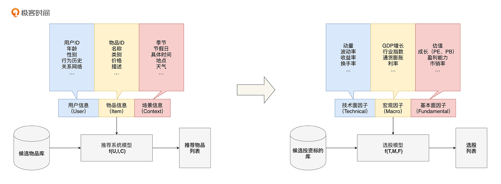
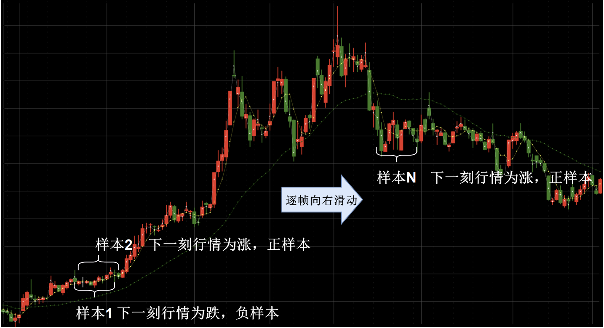
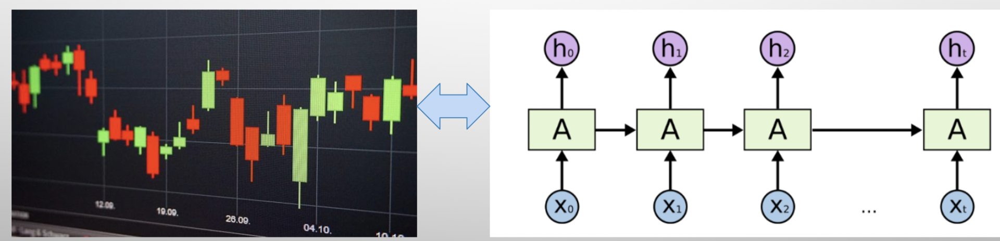
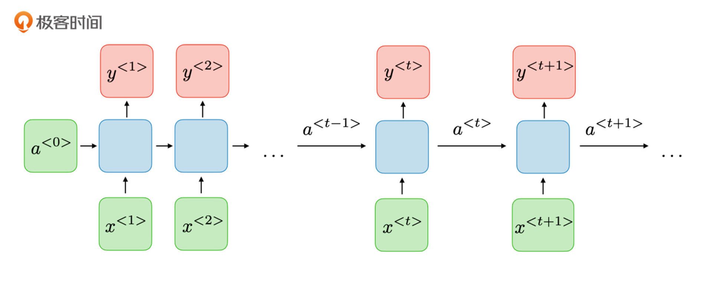
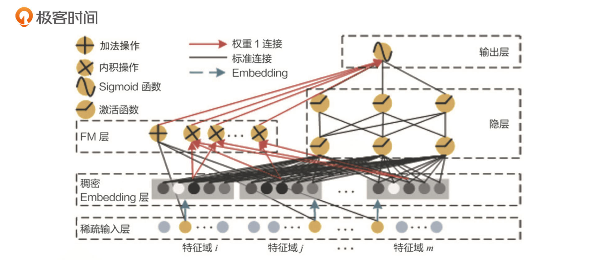
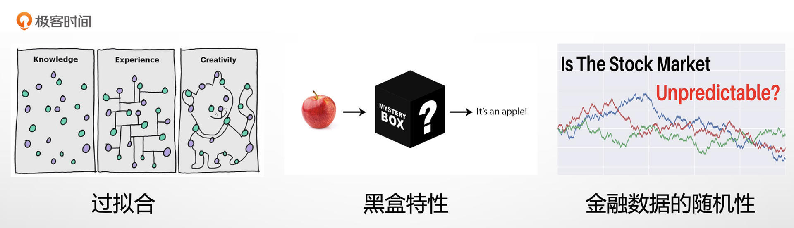

- 00 开篇词 为什么说程序员最适合学财富管理？.md.html
- 01 财富框架：建立属于你自己的财富双塔.md.html
- 02 个人发展：你自己的发展才是最大的财富源泉.md.html
- 03 理财金字塔：如何建立稳固的投资理财结构？.md.html
- 04 实战知识：有哪些收益稳健的经典资产配置组合？.md.html
- 05 支点投资法：主动投资是讲逻辑的！.md.html
- 06 不当韭菜：在财富管理的过程中摆正心态，知己知彼.md.html
- 07 职业方向：如何选择一个有前景的职业方向？.md.html
- 08 职业规划：大公司VS小公司，怎样选择更有前途？.md.html
- 09 期权股权：如何正确处理公司的期权、股权？.md.html
- 10 跳槽涨薪：如何规划一条合理的职业道路？.md.html
- 11 财富拓展：35岁失业？程序员如何拓宽财富渠道？.md.html
- 12 房产投资：如何做出理性的买房决策？.md.html
- 13 实战知识：让我们编程计算下怎么还房贷最合适.md.html
- 14 基金投资：如何让专业人士帮你赚钱？.md.html
- 15 实战知识：如何选出一只优质的基金？.md.html
- 16 股票投资：最适合散户的股票投资方法是什么？.md.html
- 17 投资闭环：如何成为越来越专业的投资者？.md.html
- 18 技术优势：程序员如何用技术超越其他投资者？.md.html
- 19 量化投资：典型的量化投资系统都包含哪些模块？.md.html
- 20 价值投资：永远不过时的中长期投资策略.md.html
- 21 趋势跟踪：怎样跟着趋势一起赚钱？.md.html
- 22 轮动策略：如何踩准市场变换的节奏？.md.html
- 23 对冲思想：这个世界上有稳赚不赔的生意吗？.md.html
- 24 多因子模型：整合不同策略，形成合力的顶层框架.md.html
- 25 机器学习：我们能用机器学习来建立投资模型吗？.md.html
- 26 量化实战：从0到1搭建起一套简单的量化投资系统（上）.md.html
- 27 量化实战：从0到1搭建起一套简单的量化投资系统（下）.md.html
- 番外一 王喆对话李腾：程序员对基金经理的灵魂十问（上）.md.html
- 番外三 有哪些能够持续学习的参考资料和相关网站？.md.html
- 番外二 王喆对话李腾：程序员对基金经理的灵魂十问（下）.md.html
- 番外四 知识总结：这门课的全部思维导图.md.html
- 答疑课堂（一） 财富框架篇、个人发展篇思考题集锦.md.html
- 答疑课堂（二） 投资实战篇、投资进阶篇思考题集锦.md.html
- 结束语 知行合一：财富管理是一生的事情.md.html
- 捐赠
25 机器学习：我们能用机器学习来建立投资模型吗？
你好，我是王喆。今天我们讲一讲机器学习在投资过程中的应用。
我想，学习这门课的程序员同学，特别是机器学习方向的算法工程师，对今天的话题一定很感兴趣。不是相关方向的同学也不用担心，我会尽量用通俗的语言讲解这节课，你一定也可以掌握这节课的核心知识。
2016年以来，机器学习的发展越来越快，在搜索、推荐、广告等业内方向都得到了成功的应用。同时，也有很多把机器学习应用在投资领域的探索。业内领先的公募基金和私募对冲基金都开设了机器学习部门，这一点从它们公开的招聘信息中就可以看到。但是，由于投资领域不像互联网领域那样，拥有开源、分享的精神，对于投资策略有极其严格的保密机制，因此没有一家成功的投资公司会把自己方案的细节公之于众，这也导致了相关资料的极度稀缺。
今天这一讲，我们当然不可能写一套确保你赚大钱的机器学习策略，但是会结合李腾老师和我对业界的调研，给你讲解一套已经被业界验证可行的机器学习建模方案。希望你能以此为起点，在正确的方向上继续探索，通过不断的回测和验证，发现一套基于机器学习模型的投资方法。
机器学习模型能解决什么投资问题？
谈起训练机器学习模型进行投资，我想你首先就会想到训练一个模型来炒股。比如，通过模型来预测股票的涨跌，然后只要按照预测结果进行投资就好了。其实机器学习在金融行业的应用范围要宽泛得多。除了直接预测股票涨跌，还有人利用机器学习模型来进行选股，或者是判断某个股票基本面的好坏，进而生成一些高阶的投资因子，这些都取得了非常不错的效果。
李腾老师上一讲介绍的多因子模型，本质上就是利用投资相关的多个因子，通过训练一个模型来进行投资。只不过，传统的基金公司更多是利用线性模型，直接组合这些因子，而在机器学习领域，不仅模型的复杂度更高，而且可利用的特征也更多，对特征的利用也更充分。
所以，利用机器学习解决投资问题的思路，其实和在互联网领域解决推荐、广告问题的思路是一样的，只不过利用的特征完全变了。如图1所示，推荐、广告模型利用的是用户的年龄、性别，物品的类别、价格等特征，投资领域的模型利用的是技术面因子、宏观因子、基本面因子等投资领域的特征。

虽然机器学习模型的应用很广泛，但直接预测股票之类投资标的的涨跌显然是最有挑战性的。接下来，我们也会基于这个问题，讲一讲从样本生成、特征选取、模型训练，再到模型预估的大致思路。
训练样本和特征如何生成？
在训练模型之前，我们首先要解决训练样本如何生成，以及训练所需的特征和标签如何处理的问题。
那么，对于一个预测股票涨跌的问题，我们一般使用滑动窗口的形式去生成训练样本。如图2，它是某只股票半年时间内的价格走势图。
在生成训练样本时，我们先选取一个滑动窗口长度，比如10个数据点。然后，选择一个滑动起点，从这个起点开始，逐个数据点地向右侧滑动，每滑动一次生成一个训练样本。

在滑动过程中，每个窗口内的行情数据就作为历史数据，我们可以从中提取出行情相关的特征。而窗口外右侧的第一帧数据，就作为样本的标签。如果是涨的话，就标记该样本是正样本，跌的话就是负样本。当然，如果你希望训练的是一个回归模型，也可以把股票的涨跌幅度这个连续值当作样本标签。直到向右滑动结束，处理完全部的行情数据，我们就完成了样本的生成。
特征一般分为两大部分，一是场内行情特征，二是场外特征。其中，场内行情特征指的是利用滑动窗口内部的行情数据，比如股票价格、成交量、换手率等信息处理出来的特征。场外特征是当时当刻跟这只股票相关的所有其他数据，比如这家公司基本面的数据，宏观经济数据等等。
但需要注意，不管什么特征都要遵循一个基本原则，就是一定要用滑动窗口那个所在时间段的数据生成当时当刻的特征，而不能引入窗口之后的任何数据。因为这样就相当于引入了未来信息，属于模型训练中的作弊行为。
样本的生成还和问题的尺度有关系。这个例子中我们采取了股票的日频数据，但如果是一个高频算法的话，日频数据的粒度显然过粗了，我们就要换成分钟级甚至秒级的数据。样本标签的生成也和涨跌信号的定义有关，我们可以选择下一刻的涨跌，也可以选择接下来5个时间点之后的涨跌。具体选择什么问题尺度，以及如何定义样本标签，根据你要解决的问题的场景来确定就可以。
什么样的模型结构适合股价预测？
现在，我们的样本和特征已经准备好了，下一步就是选择合适的模型结构进行股价预测了。如果你有一些机器学习的背景知识，我想通过观察行情数据的特点，你一定能够猜到到底什么模型适合股票价格的预测。
如图3所示，因为行情数据天然是序列化的，所以序列模型自然就是最适合处理行情数据的模型。事实上，国内的量化投资公司某方，以及国外的量化巨头two sigma，都披露过序列模型在它们投资场景下的成功应用。序列模型也曾经在two sigma举办的股票预测大赛中大放异彩，如果你想具体了解，可以看这个链接。那接下来，我就讲一下序列模型的应用。

对于一个序列模型来说，最重要的是要清楚它的基本结构和输入输出。下面的图4就是一个经典的序列模型结构示意图。其中\(x^{1}\)到\(x^{t+1}\)就是它的输入，\(y^{1}\)到\(y^{t+1}\)是它的输出，每个蓝色模块间的\(a^{t}\)，就是不同状态间传递的权重信息。

那序列模型是如何应用在预测股价这个问题上的呢？其实这个过程是很直观的。输入\(x^{t}\)其实就代表每一时刻股价相关的特征向量，你可以把我们准备好的多因子特征都放到这个向量中去。比如，向量的第一个维度代表成交量，第二个维度代表上一刻的涨跌幅度，第三个维度代表动量因子，等等。输出\(y^{t}\)代表的就是我们希望利用\(x^{t}\)预测出的结果，就是t时刻下一刻的股票涨跌结果。
现在你清楚这两点就可以，关于序列模型的具体结构先不用多想。因为成熟的机器学习工具，如TensorFlow、PyTorch等，都已经为你封装好了模型结构，你直接调用就可以了。
清楚了输入和输出，下一步就是利用上面介绍的滑动窗口的方法，准备好每个时刻的训练样本，然后调用TensorFlow等平台的训练接口，训练好一个序列模型。
接下来，我们就可以利用训练好的序列模型进行预测了。在实盘预测中，由于序列模型依赖于当前时刻前t个时刻的所有输入特征，所以我们也要准备好\(x^{1}\)到\(x^{t+1}\)的输入，然后利用这些输入去预测\(y^{t+1}\)这个输出，也就是下一刻的股票涨跌。然后，再根据预测结果来决定当前的投资行为，比如买入或卖出。
这就是利用序列模型预测股票的全过程。在实际操作中，当然有大量细节工作需要准备，比如特征的选取，样本的处理，预估相关服务的搭建，等等。此外，模型结构的选择也对预测结果有关键性的影响，比如经典的序列模型就包括RNN、LSTM、GRU等等。想了解这些模型细节的同学，可以进一步参考机器学习领域的相关资料。在之后的番外篇里，我也会给你推荐一些相关的书籍和文章。
根据很多业内人士的经验，序列模型在高频场景下是更容易出效果的，但是在天和月级别的低频领域，每个时刻的结果只跟前一个时刻关系较大，跟更早时刻的特征相关性就很弱了。这个时候，序列模型的特点就很难发挥出来，我们就应该使用更合适的模型去挖掘当前时刻不同因子之间的相互关系。比如，可以使用更善于解决特征交叉问题的XGboost，或者DeepFM等模型。
举几个具体的例子来说吧。我们一起来看图5展示的DeepFM的模型结构，你可以直观地看到，不同输入特征之间存在很多连线，这就意味着DeepFM这个模型希望通过特征交叉学到它们之间的相互作用。
还有上一讲提到的线性多因子模型，它只能给每个因子一个权重，我们没法给因子1且因子2这样的交叉因子一个权重。但直观上来讲，这种复杂的交叉因子往往包含了更有价值的信息，比如当股价和交易量同时上涨这个信号出现时，后续的股价往往有更强的上涨动能，那么这样的交叉特征就更容易被DeepFM这类模型捕获。

当然，机器学习本身是一个非常博大精深的领域，我们不可能用这么短的篇幅，把不同模型的细节和它们的特点都介绍清楚。如果你想进一步学习机器学习领域的相关知识，推荐你学习我在极客时间上的另一门课程《深度学习推荐系统实战》。
魔鬼藏在细节里
上面，我给出了用机器学习模型预测投资问题的基本方案，但要构建一个真正有效的模型，要做的工作还远不止于此，因为还存在大量可能影响最终效果的细节问题。
西方有句谚语叫“魔鬼藏在细节里”，这一点我们程序员肯定都深有体会。因为即使整体方案再“高大上”，在实现过程中，只要一个细节不注意，得到的结果就可能天差地别。我们的日常工作如此，构建一个投资模型更是如此。因为要注意的细节问题实在太多了，这里我不能全都列出来，但我可以列出两个最关键的，希望对你有所启发。
数据清洗问题
这里，我们还是拿预测股价走势当例子。对于机器学习模型来说，我们希望发现的是一些比较稳定的数据模式和规律，这就要求我们剔除一些存在异常的数据。
比如，把刚上市的新股剔除掉，因为它们的表现往往具有独特性；把刚开市时前几分钟以及闭市前最后几分钟的数据点剔除掉，因为这个时段的数据噪音也比较大；把一些垃圾股，以及近期受政策影响较大的股票剔除掉，因为这些数据也不具备一般性。依此类推，当我们清洗掉大部分异常数据之后，在留下的数据中，更有可能发掘到稳定的、预测准确度高的规律。
问题的定义
事实上，和建立一个通用的覆盖所有股票的模型相比，把问题的范围缩小，是更容易训练出一个有效的预测模型的。那怎么把问题的范围缩小呢？你可以参考下面这几种做法：
- 我们可以缩小时间区间，比如只利用闭市前30分钟的走势来预测第二天的开盘行情。
- 我们也可以缩小股票区间，比如只去研究科技类股票的走势。
- 我们还可以有针对性地定义问题。比如，确定自己要构建的机器学习模型是用来预测螺纹钢跟动力煤价格的相对走势的，并在这个基础上构建配对交易的策略。
在这些范围更小、更精细化的问题上，机器学习模型才有可能发挥出更大的威力。我们作为业余选手，只有挑准一个角度，深入钻研下去，才有可能在一个非常细分的领域打败专业的团队。
机器学习模型的局限性
虽然机器学习模型已经在投资领域取得了不小的成功，但我们要清楚的是，机器学习也不是解决投资问题的“银弹”。在实际应用中，机器学习模型，特别是深度学习模型还是存在着一定的局限性。这里，我结合专业团队的一些经验总结，列出了三点主要的局限性，供你参考。

- 复杂模型容易产生严重的过拟合现象。
- 由于深度学习的黑盒特征，在模型效果变差时，我们很难给出有效的解释。
- 和推荐系统数据相比，金融数据里的噪声更大，很多数据点都是杂乱的随机波动。而且，埋藏在杂乱数据下的潜在规律也在随时变化，这让深度学习模型学习到稳定数据模式的难度变大，且模型的有效期更短。
这三点局限性，不仅会困扰散户投资者，而且也让一线的量化投资团队相当头疼。为了尽量规避这三点局限性，专业的量化团队会在模型结构优化、数据清洗、模型实时更新等多个方向上进行改进。我们可以在技术上学习这些做法，但同时也要牢记：作为散户，我们的时间、精力和资源都是有限的，一定要把有限的时间用在解决一个规模较小的问题上，这样才有可能在一个点上击败专业投资者。
小结
我们在这一讲里，介绍了机器学习在投资领域的典型应用，讲解了一套已经被业界验证可行的机器学习建模方案。最后，我再列出这一讲的关键知识点，供你回顾：
- 用机器学习解决投资问题，本质思路跟解决推荐、广告问题是一样的，只不过二者所利用的特征完全不同。
- 在股票预测中，训练数据是通过滑动窗口滑动生成的。在生成过程中要避免引入未来信息。
- LSTM、RNN等序列模型常被用于解决跟走势相关的预测问题，XGboost、DeepFM等模型更善于处理特征交叉的问题。
- 影响机器学习模型成败的关键在于细节。严格的数据清洗和精准的问题定义，都是成功的关键。
- 机器学习模型在投资领域的应用存在着局限性，最重要的三点是过拟合，黑盒特性以及金融数据的强随机性。我们要懂得扬长避短，尽量规避这些局限性。
这一讲结束后，我和李腾就把所有主流的投资策略都介绍了一遍，希望学到这里的你已经感觉自己“功力大涨”了。如果觉得不过瘾，我们还有最后的实战环节。接下来的两讲，我将带你实现一个简单的量化投资系统，在这个过程中，希望你能把这一模块的所学知识融会贯通，并做到在实践中灵活运用。
思考题
在精力有限的情况下，你觉得下面三个场景中的问题，哪一个更适合用机器学习的方式解决？为什么？
- 我想训练一个分钟级别的预测螺纹钢期货涨跌的模型；
- 我想用机器学习模型寻找下一周可能上涨的行业；
- 我听说过涨停敢死队的故事，想用机器学习模型在盘中预测哪只股票可能会涨停。
欢迎你在留言区与我交流讨论，我们下一讲见。
© 2019 - 2023 Liangliang Lee. Powered by gin and hexo-theme-book.